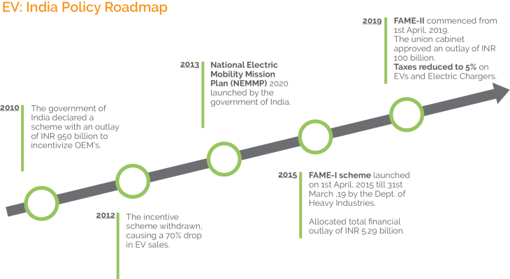
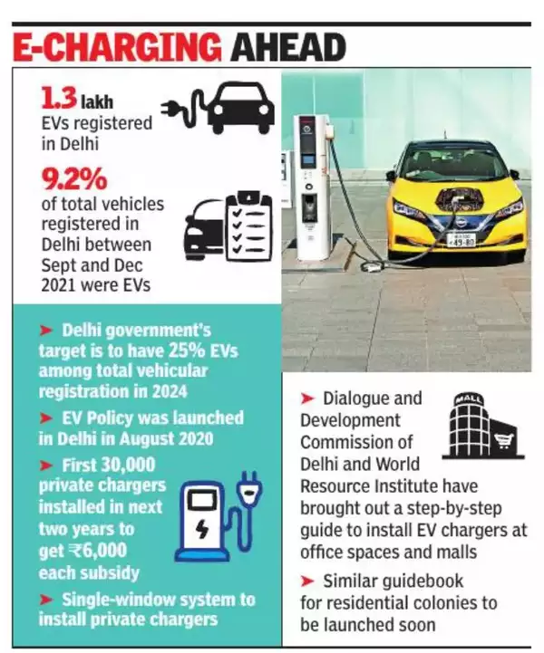
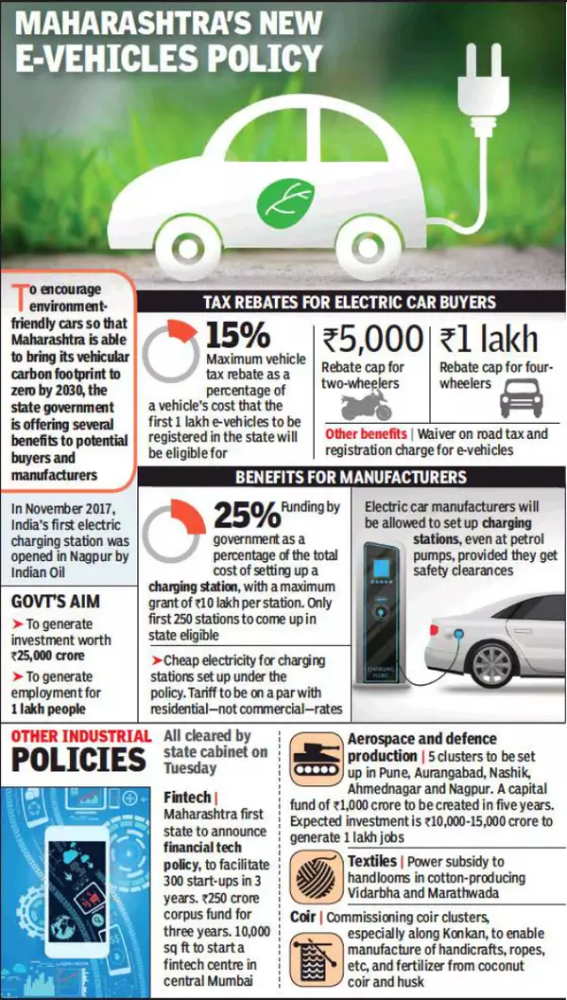
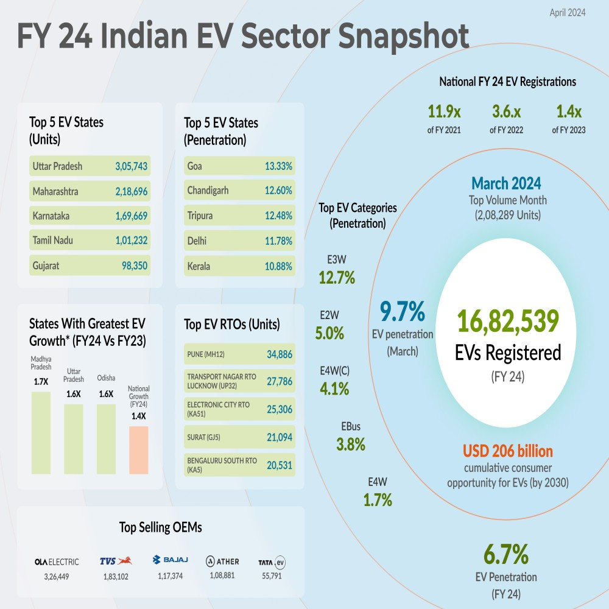
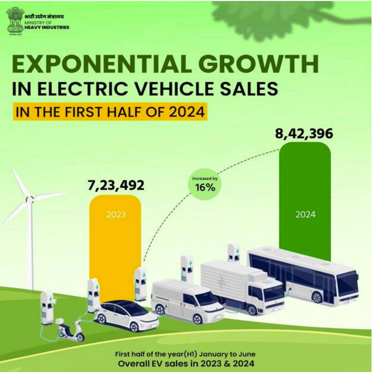
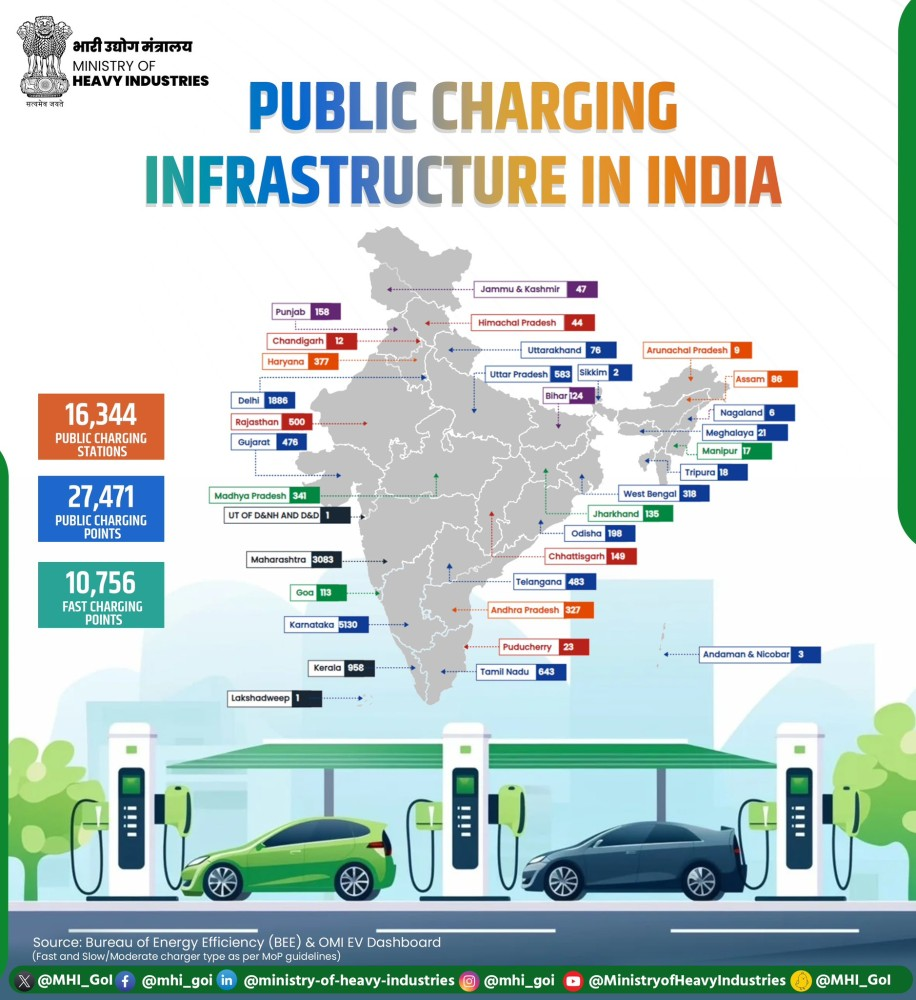

Introduction
India’s electric vehicle (EV) market is buzzing with potential, driven by the increasing demand for sustainable mobility solutions. At the heart of this transformation lies a robust policy framework crafted by the central and state governments. These policies are not just steering the growth of the EV industry but are also laying the groundwork for a cleaner, greener future.
Let’s take a closer look at the key policies shaping the EV market in India and how they are fueling this electric revolution.
Central Government Policies Supporting EV Growth
FAME India Scheme
- Launched in 2015, the FAME scheme aims to promote electric vehicles through subsidies and incentives for manufacturers and consumers. The initiative has two phases, with Phase II focusing on expanding the charging infrastructure and incentivizing electric buses, three-wheelers, and two-wheelers. The government allocated ₹10,000 crore (approximately $1.4 billion) for this phase to enhance EV adoption across the country.
National Electric Mobility Mission Plan (NEMMP) 2020
- This comprehensive framework seeks to achieve national fuel security by promoting electric mobility in public transport, commercial vehicles, and personal vehicles. The NEMMP aims to have 6-7 million EVs on Indian roads by 2020 and emphasizes research and development for indigenous manufacturing of EV components.
Production-Linked Incentive (PLI) Scheme
- Introduced in 2021, this scheme incentivizes domestic manufacturing of advanced automotive technologies, including EVs and batteries. The PLI scheme aims to attract investments worth ₹42,500 crore (around $5.7 billion) over five years, thereby boosting local production and reducing dependence on imports.
GST Reductions on EVs
In a significant move, the GST rate on EVs has been slashed from 12% to 5%, with chargers taxed at 5%. These reductions make EVs more accessible, particularly for price-sensitive buyers, encouraging adoption.

State Government Policies for EV Development
1. Delhi Electric Vehicle Policy (2020)
Consumers receive subsidies of up to ₹1.5 lakh (approximately $2,000) for electric cars and ₹30,000 for two-wheelers. This has led to a significant increase in EV registrations, with over 10,000 electric vehicles registered within the first year of the policy implementation. The government plans to set up 1,000 public charging stations by 2025, which has encouraged more residents to consider EVs due to reduced range anxiety.
The policy has positioned Delhi as one of the fastest-growing EV markets in India, contributing to a reduction in air pollution levels and promoting sustainable urban transport.

2. Maharashtra EV Policy
The state offers incentives for setting up manufacturing units for EVs and batteries, attracting investments from major automotive companies like Tata Motors and Mahindra Electric Automobile Limited . The policy targets the installation of 2,500 charging stations by 2025 to support a seamless EV experience. Maharashtra has seen a surge in local manufacturing capabilities and an increase in EV sales, with over 5,000 electric vehicles sold within the first six months of the policy rollout.

3. Gujarat Electric Vehicle Policy (2021)
Gujarat's policy aims to promote electric mobility through financial incentives and support for local manufacturing of EV components. The state provides subsidies of up to ₹20,000 (approximately $270) for two-wheelers and ₹1.5 lakh for four-wheelers, significantly lowering the purchase price. The government is collaborating with private players to establish charging stations across urban areas, enhancing accessibility.
The policy has resulted in increased consumer interest in electric vehicles, with a reported 3,500 new registrations within the first year. Additionally, it has spurred investment in local manufacturing facilities.

4. Karnataka’s Focus on EV Manufacturing
Karnataka has positioned itself as a hub for EV innovation, offering tax exemptions and subsidies to startups. With designated zones, Karnataka is promoting local manufacturing, reducing logistical challenges for EV makers. Tamil Nadu is setting up EV hubs to attract investments and foster a vibrant EV ecosystem.
Fiscal Benefits for EV Investments
Investors enjoy benefits such as tax breaks and subsidies, which encourage large-scale manufacturing.
Infrastructure Development Policies
Charging Infrastructure Framework
- Private-Public Partnership Models: Collaborations between private companies and the government are accelerating the setup of charging stations.
- Standards for EV Charging Stations: The Bureau of Indian Standards (BIS) has established guidelines to ensure uniformity in EV charging setups.
Renewable Energy Integration
- Policies for Solar-Powered Charging: The integration of solar energy with EV charging stations is gaining momentum, driven by green energy policies.
- Net Metering Benefits: Net metering allows EV station owners to earn credits by feeding surplus solar power back into the grid.

Policy Impacts on EV Adoption
- Rise in Two- and Three-Wheeler EVs: The policies have driven a surge in affordable EV options, especially two-wheelers and three-wheelers, dominating the market.
- Increasing Adoption in Commercial Fleets: Logistics and delivery companies are rapidly electrifying their fleets to save costs and reduce emissions.
- Growth of EV Startups: Supportive policies have fueled the growth of startups, fostering innovation and competition.
- Reduced Dependence on Imports: Local manufacturing of EV components has decreased reliance on imports, strengthening the domestic supply chain.

Future Policy Directions
- Focus on Battery Recycling: Encouraging policies for recycling lithium-ion batteries can ensure sustainability in the EV ecosystem.
- Incentives for Research and Development (R&D): More funding for R&D will lead to better EV technology, addressing current limitations.
- Cross-Sector Collaboration for EV Promotion: Collaborations across energy, automotive, and tech sectors will unlock the full potential of EVs.
Conclusion
India’s EV policy frameworks are undoubtedly the backbone of the nation’s electric mobility transformation. While challenges persist, the progress achieved so far sets a solid foundation for the future. As India accelerates toward becoming an EV powerhouse, continuous innovation and adaptive policies will be key.